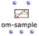
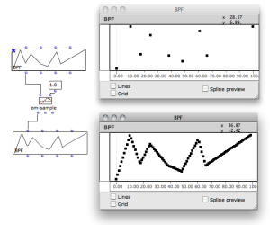
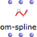
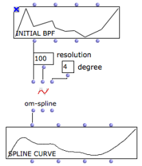

BPF and BPC Tools
This section details a set of important concept and tools. Among these, a number of function boxes allow to build or manipulate BPFs and BPCs. To access these tools, go to Functions / Basic Tools / Curves & Functions.
The online function reference provides more detailed information about the following (and more) functions, as well as different arguments. To refer to it, select a function and press d.
Getting Coordinates : Transfer and Point Coordinates
The point-pairs function returns the points of the curve as a list of (x y) coordinates.

Two transfer tools return the values of points that are not explicitly given in the curve.
"X-transfer" returns the ordinates for a given abscissa.
"Y-transfer" returns the abscissa values corresponding to given ordinates.
Sampling a Curve : Om-Sample
 | Sampling consists in creating a new curve of n regularly sampled points, out of an initial set of points. |
The om-sample function has two default inputs :
It has three optional inputs :
|  The sampling rate can be expressed as a float input to Om-samplezoom |
Be a curve whose min = 0 and max = 100.
- Integer : n = 20 we get 20 points, whose values are (0 5 10 15 20 25 30 35 .... 100).
- Float : SR = 20.0, we get 5 points, whose values are (0 20.0 40.0 60.0 80.0 100.0).
In any case n = (xmax - xmin) / SR
Om-sample returns 3 values :
- a sampled object, such as a BPF , BPC ...
- a list of x -coordinates
- a list of y -coordinates
If n is lower than the initial number of points, curves are down-sampled. If n is higher, curves are up-sampled.
Splines : Om-Spline
 | Splines are mathematical functions defined piecewise by polynomial interpolation. They are used for generating smoothed interpolated shapes , starting from a set of control points. The om-spline function generates spline curves starting from the points of a BPF or BPC. |
"resolution" : a number of points in the spline preview.
"degree" : a number of adjacent control points used for computing the spline curve points. Higher values produce smoother curves.
The three outputs of om-spline return :
|  |
The BPF and BPC editors allow to visualize a preview of the output spline object.